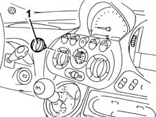

5020B22 heater control support control (one) - arrange
- Path
- Procedures > 50 AUXILIARY UNITS > 5020 HEATER > 5020B heater controls > 5020B22 heater control support control (one) - arrange
- Kind
- repair procedure (removal / refitting; the operation number is the code)
- Applies to
- all engines; all production periods
- Interactive page
- https://sloeber94.github.io/elrnDB-fMltpl/en/#/2891786
Applies to: all engines; all production periods
 Removing
Removing
 Refitting
Refitting1. Remove the control knob.

Applies to: all engines; all production periods
Refitting
RemovingCheck that the conrol knob is not damaged.
Fit the control knob.